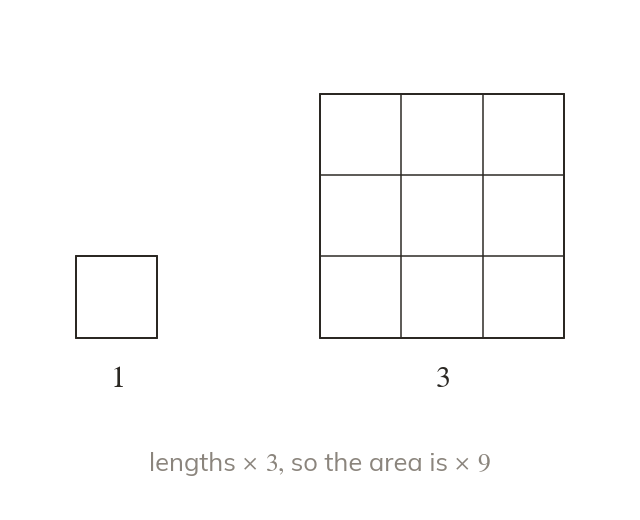
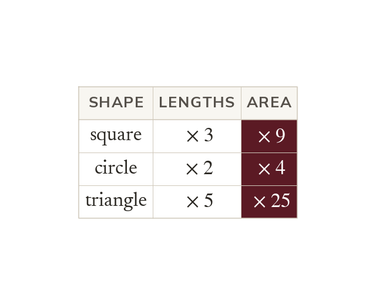
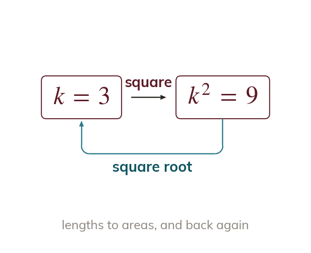
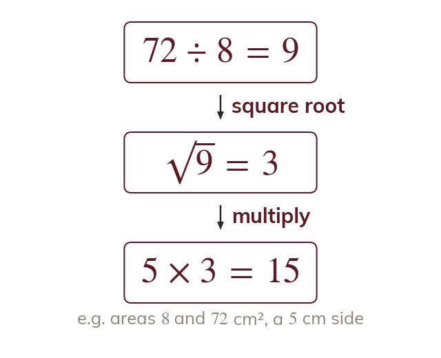

Area uses the factor twice
Area has two lengths, each multiplied by So the area is multiplied by
Area has two length dimensions, and each one is multiplied by So the area is multiplied by
Double the size of a poster and it needs four times the paper. Areas grow faster than lengths, and the scale factor says exactly how much faster.
Work down the page at your own pace. Write every answer in your book first, then click to check it.
Read each card, then follow the worked examples one step at a time.

Area has two lengths, each multiplied by So the area is multiplied by

Every area of a similar shape scales by
Curved shapes and faces scale the same way.
Pick an answer. If it's wrong, the feedback tells you which mistake it was.
Read each card, then follow the worked examples one step at a time.

From areas back to lengths, the squaring is undone. So the length factor is the square root of the area factor.

Two areas divide to give the area scale factor. Its square root then scales the lengths.
Pick an answer. If it's wrong, the feedback tells you which mistake it was.
Finished? Next lesson: 10H.10.3 Volume Scale Factors.
Log in, then search for a code to practise that skill.
Videos, worksheets and more on each part of this lesson.